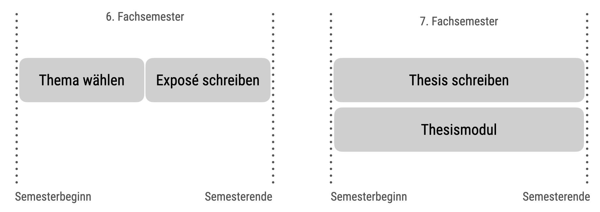

flowchart TD A[Studi liest Hinweise] B[Studi kontaktiert Betreuer] C[Studie schreibt Exposé] D[Betreuer gibt Feedback] E[Studie meldet formal an] F[Los geht's!] A-->B-->C-->D-->E-->F
Willkommen
Liebe Studentin, lieber Student,
Sie überlegen, Ihre Abschlussarbeit bei Professor Sauer zu schreiben. Gut! Damit bekommen Sie einen erfahrenen Gutachter und Forscher an Ihre Seite gestellt. Wie in jeder Zusammenarbeit gibt es gewisse Erwartungen für einen erfolgreichen Abschluss. Es ist in Ihrem Sinne, die Erwartungen Ihres Prüfers gut zu kennen, damit Sie prüfen können, ob die skizzierten Rahmenbedingungen für Sie passen. Außerdem können Sie Ihre Forschungsarbeit entsprechend ausrichten. Je klarer die Erwartungen, desto unwahrscheinlicher ist es, dass im Nachgang jemand (z.B. Ihr Prüfer) sagt, er habe das ganz anders gewollt.
Bitte bedenken Sie, dass die hier formulierten Erwartungen an Sie nicht zum Komfort Ihres Prüfers erstellt sind. Es geht darum, typische Fehler zu vermeiden und einen reibungslosen Ablauf der Begutachtung sicherzustellen. Gleichzeitig soll ein solides Qualitätsniveau - anspruchsvoll, aber gut machbar - sichergestellt werden. Lesen Sie sich bitte die Hinweise sorgfältig durch. Wenn Sie sich bei mir für Ihre Abschlussarbeit anmelden, gehe ich davon aus, dass Sie diese Hinweise gelesen haben und einverstanden sind.
Themenwahl
Sie können selber ein Thema vorschlagen oder eines der Themen wählen, die ich in meiner Liste freier Themen anbiete. Das Thema soll in Bezug stehen zu Ihrem Studiengang. Ich betreue Arbeiten mit verschiedener Methodik: theoretische Arbeiten, Arbeiten mit qualitativer Methodik und Arbeiten mit quantitativer Methodik. Mein Fokus liegt dabei bei Arbeiten mit quantitativer Methodikk.
Liste meiner freien Themen
üëâ Meine Liste freier Themen üëà
Wahl des Themas und dis Gutachtis der Abschlussarbeit
Figure 1 zeigt den Ablauf der Abschlussarbeit mit einem Fokus auf die Vorbereitung, also der Wahl Ihres Themas bzw. die Absprache des Themas mit dem Gutachter.
Lesen Sie sich als Erstes die Hinweise Ihres Gutachters durch: Welche Themen gibt er oder sie vor? Welche Rahmenbedingungen gibt es? Wählen Sie ein Thema aus der Liste der verfügbaren Themen für Abschlussarbeiten. Sprechen Sie den Gutachter an, dass Sie das Thema bearbeiten wollen. Bringen Sie Ihre Fragen mit zu dem Gespräch? (Das Gespräch kann persönlich sein, via Zoom oder E-Mail) Wenn Sie sich mit dem Gutachter einig sind über das Thema, sagen Sie explizit verbindlich zu und der Gutachter sagt verbindlich zu. Jetzt schreiben Sie ein Exposé (und reichen es via Moodle ein). Der Dozent gibt Ihnen schriftlich Feedback zu Ihrem Exposé. Melden Sie dann Ihr Thema via Primuss an. Puh, jetzt heißt es für drei Monate: Lesen, Denken, Schreiben… Jippie! Fast geschafft! Sie reichen Ihre Arbeit ein. Sie bekommen ein (schriftliches) Gutachten zu Ihrer Arbeit. Ein Kolloquium ist nicht vorgesehen, aber Sie präsentieren Ihre Arbeit im Rahmen des Bachelorseminars.
Bitte beachten Sie, dass ich Themen erst dann reserviere, wenn Sie verbindlich zugesagt haben. Das hat den Grund, (vielleicht begehrte) Themen nicht unnötig “brach” liegen zu lassen.
Angemeldet ist angemeldet
Wenn Sie angemeldet sind, tickt die Uhr. Außerdem können Sie Ihren Titel nicht mehr (ohne Weiteres) ändern. Daher überlegen Sie sich Ihren Titel gut, bevor Sie die Arbeit anmelden. Der Titel ist ein zentraler Bestandteil Ihrer Arbeit und sollte wohl überlegt sein. \(\square\)
Fristen
Bitte beachten Sie, dass es für die Anmeldung und Bearbeitung Ihrer Abschlussarbeit definierte Fristen gibt.
- Wahl des Themas: Die Wahl des Themas beginnt mit Beginn des 6. Fachsemesters (SoSe: 15. März, WiSe: 1. Oktober).1
- Themenvergabe: Themen (und damit eine verbindliche Zusage meinerseits) vergebe ich bis spätestens Mitte des 6. Fachsemesters (SoSe: 15. Mai, WiSe: 15. November). Nach diesem Termin ist eine Anmeldung (bei mir) erst wieder im Folgesemester möglich (s. Abbildung).
- Exposé: Das Exposé muss bis Semesterende (vor dem Semester Ihrer Abschlussarbeit) bei mir eingereicht sein (SoSe: 30. Juni, WiSe: 31. Dezember).
- Feedback zum Exposé: Sie bekommen gegen Ende des Prüfungszeitraums schriftliches Feedback zu Ihrem Exposé (SoSe: 31. Juli, WiSe: 31. Januar).
- Die Bearbeitungszeit Ihrer Abschlussarbeit beginnt mit Start des jeweiligen FS (z.B. 7. Fachsemesters; WiSe: 1. Oktober, SoSe: 15. März).
- Die Bearbeitungszeit Ihrer Abschlussarbeit endet drei Monate nach Beginn (WiSe: 31. Dezember, SoSe: 15. Juni).
- Ihr Gutachten und Ihre Note erhalten Sie bis zu Beginn des Folgesemester.
Figure 2 stellt die Fristen im Überblick dar.

Fristen im Blick behalten
Im Anmeldeformular werden o.g. Fristen eingetragen. Damit sind die Fristen bzw. die Arbeitsdauer festgelegt. Behalten Sie Ihre Fristen gut im Blick. \(\square\)
go
Wie und wann helfen Sie mir bei meiner Abschlussarbeit?
Grundsätzlich sollen Sie in der Abschlussarbeit zeigen, dass Sie befähigt sind, selbständig ein wissenschaftliches Problem zu lösen bzw. eine Problemstellung zu untersuchen, vgl. §28 Absatz 1 der APO. Ihre Selbständigkeit ist Teil meiner Erwartung; im Rahmen Ihres Studiums sollten Sie sich alle notwendigen Kompetenzen für die Abschlussarbeit angeeignet haben. Es können aber unerwartete, neue Probleme auftreten (wie eine Datenlage, die ungewöhnliche statistische Verfahren erfordert). In diesem Fall stehe ich Ihnen beratend zur Seite. Ansonsten und grundsätzlich sollten Sie selbständig arbeiten.
Da Sie eine wissenschaftliche Aufgabe selbständig lösen sollen, ist ein persönliches Gespräch während der Bearbeitungszeit i.d.R. nicht vorgesehen. Bei besonders aufwändigen, ungewöhnlichen oder komplexen Fragestellungen - insbesondere wenn Forschungsmethoden verwendet werden, die nicht im Unterricht gelehrt werden - stehe ich auf Wunsch mit einem Beratungsgespräch zur Seite. Im Zweifel gilt: Fragen Sie mich einfach; es ist meine Verantwortung, zu entscheiden, ob Sie die Frage selber lösen können sollten, oder ob ich Ihnen helfen sollte.
Wichtig ist, dass Sie wissen, dass ich Ihre Arbeit nicht vorab korrigiere - abgesehen von meinem Feedback auf Ihr Exposé. Bitte reichen Sie mir nicht Ihre Gliederung, Ihren Fragebogen, Ihren Theorieteil etc. vorab ein. Auf der anderen Seite sollten Sie sich aber melden, wenn Sie vor Problemen stehen, die Sie auch nach ernsthaften, ausdauernden Bemühungen nicht lösen können.
Eine wichtige Hilfe, die ich Ihnen gebe, ist ein Feedback zu Ihrem Exposé (s. unten). Im Rahmen Ihres Exposés skizzieren Sie die zentralen Stränge Ihrer Arbeit vor. Auf dieser Basis kann ich Ihnen grobe (!) Anhaltspunkte geben, ob Sie auf dem richtigen Weg sind. Bitte beachten Sie, dass ein positives Feedback von mir nicht garantiert, dass Sie die Arbeit mit einer bestimmten (z.B. sehr guten) Note abschließen. Ich korrigiere auch nicht alle Fehler im Exposé, sondern zeige Ihnen eine grobe Richtung auf bzw. weise auf einige grobe Fehler hin. Ein ausführliches Feedback bekommen Sie erst nach Abgabe – genau darin, in der eigenen Ausarbeitung, besteht Ihre Prüfungsleistung.
Schreiben Sie ein Exposé
Unterm Strich spart Ihnen das Exposé Zeit bzw. ist ein zentraler Baustein für die Qualität der Arbeit. Fehler können früh erkannt und vermieden werden. Die Zeit, die Sie ins Exposé investieren, ist gut investiert. Sie dürfen auch Teile des Exposés identisch in Ihrer Abschlussarbeit verwenden.
Wichtig ist, dass das Exposé Ihnen genau in dem Maße nützt, wie Sie Energie investieren. Ein “0815-Exposé” (also ein Exposé ohne Fachkenntnis) wird Ihnen wenig nützen. Nur wenn Sie sich auskennen in Ihrem Thema (in Ihrer Forschungsfrage), können Sie ein sinnvolles Exposé schreiben. Und nur dann können Sie nützliches Feedback vom Gutachter bekommen.
Gliederungsvorschlag zu Ihrem Exposé
Das Exposé ist wie ein normaler wissenschaftlicher Bericht aufzubauen. Folgende Hauptteile sind sinnvoll:
Abstract: Zusammenfassung aller zentralen Punkte des Dokuments (ca. 150 Wörter).
Einführung: Hintergrund und Relevanz Ihrer Forschung sowie die Forschungsfrage und ggf. Hypothesen
Theorie: Zentraler theoretischer Hintergrund zur Forschungsfrage
Methoden: Forschungsdesign, Stichprobe, Messinstrumente, Versuchsablauf, Datenauswertung
optional: Projektplan (Zeit- und Arbeitsplan)
Einige Hinweise zum Exposé
Beschreiben Sie alle relevanten Aspekte prägnant, aber nur die relevanten Aspekte.
Die Forschungsfrage sollte prägnant im Exposé vorgestellt sein.
Falls Sie ein Thema zugeteilt bekommen haben, sollten Sie es - ggf. nach Rücksprache - zu einer Forschungsfrage präzisieren.
Formulieren Sie Hypothesen oder Forschungsfragen konkret, so dass der Leser weiß, was Sie genau machen wollen.
Stellen Sie den Ablauf des Versuchs vor (also was genau eine Versuchsperson macht).
Diskutieren Sie ggf. ethische Aspekte, die eine Rolle spielen (könnten).
Geben Sie wenn möglich die Größe der erwarteten Effekte an (z.B. in Pearsons r oder Cohens d) und/oder spezifizieren Sie Ihre Priors (nur bei Bayes-Analysen).
Planen Sie ggf. die Stichprobengröße passend zum erwarteten Effekt (bei frequentistischer Methodik) bzw. nur Zeitraum und Vorgehen Ihrer Erhebung.
Zeigen Sie, dass Sie die Literatur überblicken.
Erläutern Sie ggf. kurz, wie Sie die Stichprobe gewinnen wollen (z.B. Studierende anschreiben).
Wie in jedem wissenschaftlichen Bericht soll ordentlich zitiert werden. Natürlich bedeutet das auch, dass sich im Literaturverzeichnis genau die zitierte Literatur findet (nicht mehr und nicht weniger).
Der Umfang des Exposés beträgt ca. 2000 Wörter. Geben Sie die Anzahl der Wörter auf dem Deckblatt an.
Fügen Sie eine grobe (oder, wenn Sie möchten, bereits genaue) Gliederung Ihrer Arbeit hinzu. Spätere Abweichungen von der Gliederung sind möglich.
Zitieren Sie ca. mind. 30% der empfohlenen Literaturmenge im Exposé.
Wie “groß” soll meine Studie sein?
Hier folgt ein grobes Mengengerüst für die (empirische) Studie Ihrer Abschlussarbeit, damit Sie eine Einschätzung, wie viel “gut” ist (Teilnote 2). Dieses Mengengerüst passt nicht für alle Situationen. Bitte sprechen Sie mich im Zweifel darauf an bzw. begründen Sie Ihren Studienaufbau im Exposé und in der Thesis.
Quantitative Studien mit Versuchspersonen
Experiment:
Between-Design: ca. 20 Personen pro Gruppe
Within-Design: ca. 30 pro Faktor
Beobachtungsstudie: ca. 150 Fälle; mind. 3 Variablen
Fragebogenvalidierung: ca. 200 Fälle
Interview-Studie: ca. 120-150 Min. Interviewdauer (insgesamt), meist bieten sich mehrere Interviewpartner an
Grundsätzlich gilt hier: Mehr ist besser :-)
Da die Aussagekraft von Experimenten i.d.R. höher ist als die Aussagekraft einer Beobachtungsstudie, sollten Sie einem Experiment - sofern möglich - den Vorzug geben. Falls Sie ein Beobachtungsdesign wählen, um kausale Aussagen zu tätigen, sollten Sie die Wahl rechtfertigen und unter Verwendung einer Theorie (die Verwendung eines DAGs ist zu empfehlen) die Stichhaltigkeit Ihres Designs erläutern.
Wenn Sie ein qualitatives Design bearbeiten, dann ist die Grounded Theory der Inhaltsanalyse von Mayring zu bevorzugen.
Qualitative Studie
Ca. 8-10 Interviews zu je 30 Minuten Länge sind eine nützliche Richtgröße.
Sie können KI-Tools zur Transkription nutzen wie z.B. riverside.
Reviews
In die Feinanalyse sollten ca. 80-100 Reviews einfließen.
Wenn ich eine theoretische Arbeit schreibe, welche Methode verwende ich dann?
Falls Sie eine theoretische Arbeit schreiben, also keinen empirischen Teil haben, ist Ihre Methode zumeist die des Literaturstudiums. Eine unsystematische oder systematische Literaturrecherche bietet sich an; die systematische ist zu bevorzugen.
Formalia
Formatierung
Zur formalen (und inhaltlichen) Gestaltung sei dieses Buch empfohlen: “Peters, J. H., & Dörfler, T. (2019). Abschlussarbeiten in der Psychologie und den Sozialwissenschaften - Schreiben und Gestalten. München: Pearson Studium.” In diesem Titel finden Sie viel Wertvolles zum Aufbau und Gestaltung Ihrer Abschlussarbeit. Formatieren Sie Ihre Arbeit nicht wie ein Manuskript nach APA-Vorlagen, das Sie bei einem Verlag einreichen, sondern wie einen Forschungsbericht (vgl. Peters & Dörfler, 2019, S. 3). Das beinhaltet auch, dass Sie nach APA/DGPs zitieren.
Ambitionierte Studierende (insbesondere in einem Master-Studiengang), die auf eine sehr gute Teilnote im Bereich “Formales” abzielen, sollten sich möglichst eng an die formalen Vorgaben halten.
Richtlinien zur Seitenformatierung und -layout finden Sie in Peters und Dörfler (2019), vgl. Kap. 4. Befolgen Sie die Art, Statistiken zu berichten laut APA bzw. DGPs, sofern Peters und Dörfler (2019) nicht andere Angaben machen.
Werten Sie quantitative Daten mit R oder Python aus.
Gestalten Sie Ihre Arbeit nachprüfbar: Berichten Sie die Syntax, das genaue Vorgehen beim Versuch, die Stichprobenplanung, reichen Sie die Daten und ggf. das Stimulusmaterial (z.B. Bilder) ein.
Informieren Sie sich im Übrigen über die offiziellen Richtlinien der Hochschule (wie Abgabefristen) in den entsprechenden Dokumenten wie der APO und der SPO.
Im Merkblatt für Abschlussarbeiten der Prüfungsabteilung finden Sie weitere formale Vorgaben, etwa zur ehrenwörtlichen Erklärung.
Schreiben Sie die Wortzahl (nur Hauptteil, ab Einleitung bis einschl. Diskussion) auf das Deckblatt oder in den Anhang.
Drucken Sie Ihre Arbeit beidseitig, in Klebebindung.
Anmeldung
Wenn Sie ein Formular an mich (oder Dritte, wie die Prüfungsabteilung) senden, nennen Sie bitte stets Ihren Namen im Dateinamen. Falsch: “Anmeldung-Thesis.pdf”. Richtig: “Anmeldung-Thesis-Müller-Marina-01234567.pdf”.
Bitte füllen Sie das Formular entsprechend aus, bevor Sie es mir schicken. D.h. tragen Sie Titel der Arbeit sowie Namen der Gutachter schon ein.
Wie viel soll ich schreiben?
Der Umfang sollte im Bachelor ca. 10,000 - 12,000 Wörter im Hauptteil (~30-50 Seiten insgesamt) betragen. Beachten Sie, dass die Wortzahl wichtiger ist als die Seitenzahl. Als “Hauptteil” gilt der Teil von der Arbeit ohne Deckblatt, Verzeichnisse, Anhang und Erklärungen.
Diese Zahlen beinhalten NUR den Hauptteil (von Einleitung bis zur Diskussion, jeweils einschließlich) – ohne Abstract, Anhang, Literaturverzeichnis und Deckblatt (aber inklusive Tabellen und Abbildungen und sonstigem Inhalt).
Bitte geben Sie die Wortzahl, wie hier definiert, auf dem Deckblatt Ihrer Arbeit an.
Wie viel Literatur soll ich zitieren?
Für eine gute Teilnote sollte Ihr Literaturumfang ca. 40-50 Quellen (Bachelor) bzw.* 60-80 Quellen (Master)* betragen bei einer empirischen Arbeit. Bei einer theoretischen Arbeit ist mit dem Faktor 2 zu rechnen.
Ca. 30% (Bachelor) bzw. 50% (Master) der zitierten Literatur sollte sich aus Fachartikeln speisen.
Sie sind bestimmt super streng, was die Methoden/Statistik betrifft?
Ja :-)
Im Ernst: Ich erwarte nicht mehr als das, was im Unterricht an methodischem Wissen vermittelt wurde.
Ambitionierten Studierenden sei empfohlen, eine experimentelle Studie durchzuführen (keine Beobachtungsstudie) - sofern möglich, die Arbeit zu präregistrieren (z.B. bei www.osf.io), generell auf gute Reproduzierbarkeit zu achten und multiple Regression zu verwenden - sofern sinnvoll.
Für neue (im Unterricht nicht behandelte quantitative) Methoden bin ich immer offen und freue mich über Ihre Ideen.
Plagiate
Don’t do it
Lassen Sie äußerste Vorsicht walten, dass sich keine Plagiate in Ihrer Abschlussarbeit finden. Finde ich ein oder mehrere Plagiate, so werde ich die Arbeit mit “nicht bestanden” beurteilen. Eine Leistung als die eigene auszugeben, die aber gar nicht die eigene ist, ist Betrug. Bitte bedenken Sie auch, dass eine Ausrede wie “war keine Absicht, hab nicht aufgepasst” nicht ausreicht: Sie sind für die Qualität und Redlichkeit Ihrer Arbeit verantwortlich. In Ihrer Verantwortung liegt entsprechend die notwendige Sorgfalt, Plagiate zu vermeiden. Auch die Ausrede “Mein Literaturprogramm oder Word muss hier einen Fehler gemacht haben” wird nicht gelten gelassen werden. Hier gilt wieder: Sie sind für die Qualität und Redlichkeit Ihrer Abschlussarbeit verantwortlich; die Verantwortung ist nicht an eine Maschine delegierbar. Falls Sie Fragen zu dem Thema Plagiate haben, sprechen Sie mich jederzeit gerne an.
Darf ich ein Thema wählen, das ich schon früher (z.B. in einer Seminararbeit) bearbeitet habe?
Sie dürfen ein Thema in Ihrer Abschlussarbeit bearbeiten, welches ähnlich zu einer früheren Prüfungsleistung ist. Auf keinen Fall dürfen Sie das gleiche Thema einer früheren Seminararbeit als Thema Ihrer Thesis verwenden: Es ist nicht zulässig, eine Arbeit als Prüfungsleistung für mehrere Module (inkl. Thesis) einzureichen. Im Zweifelsfall sprechen Sie dazu mich oder die Prüfungsabteilung an.
ABER: Sie dürfen ein Exposé, welches Sie explizit als Vorbereitung für Ihre Abschlussarbeit als Prüfungsleistung eingereicht haben, als Grundlage für Ihre Abschlussarbeit verwenden. Sie dürfen also Teile aus Ihrem Exposé übernehmen. Diese müssen als (direktes oder indirektes) Zitat gekennzeichnet sein (ansonsten würde es sich um ein Selbstplagiat handeln).
Ich empfehle Ihnen, keine direkten Zitate zu übernehmen, sondern wenn überhaupt dann nur indirekte Zitate.
… und zu unerlaubten Hilfsmitteln
Zu unerlaubten Hilfsmitteln zählen insbesondere die Hilfe Dritter sowie von künstlicher Intelligenz. Die Arbeit darf nur mit Hilfe erlaubter Hilfsmittel geschrieben werden. So ist es nicht zulässig, dass Teile Ihrer Arbeit von anderen Personen geschrieben, verbessert oder sonstig beeinflusst werden. Zu solchen unerlaubten Hilfsmitteln zählt auch das “Korrekturlesen” durch Dritte. Es ist weiter nicht zulässig, die Arbeit in Gänze oder Teilen von einer künstlichen Intelligenz (z.B. ChatGPT) schreiben zu lassen. Bei Fragen oder im Zweifel sprechen Sie bitte Ihre Betreuerin/Ihren Betreuer an. Das Verwenden von unerlaubten Hilfsmitteln kann von der Prüfungskommission mit Nichtbestehen der Prüfung geahndet werden.
Die Benotung Ihrer Thesis
Die Benotungskriterien sind 1) Formalia, 2) Methodik, 3) Inhalt.
Im Folgenden sind Auszüge und Beispiele für Teil-Kriterien aufgeführt, die in das jeweilige Benotungskriterium einfließen können. Bitte beachten Sie, dass die folgende Liste nicht vollständig ist und auch nicht zwangsläufig alle genannten Punkte in eine Benotung einfließen müssen. Die Gesamtnote ist nicht (notwendig) ein ungewichteter Durchschnitt aus den drei Benotungskriterien. Für die drei Benotungskriterien werden nicht notwendig Teilnoten ausgewiesen.
Formalia
Vollständigkeit (Verzeichnisse, Anhänge, Erklärungen)
Gestaltung
Rechtschreibung und Grammatik (Korrektheit; inklusive Interpunktion)
Zitierweise in Text und Fußnoten (Einheitlichkeit, Korrektheit)
Literaturverzeichnis (Einheitlichkeit, Korrektheit)
Umfang (Problemangemessenheit - gem. Leitfaden zur formalen Gestaltung von Seminar- und Abschlussarbeiten)
Methoden
Methodenauswahl (Problembezug)
Methodenanwendung (Problemlösungsbezug, Angemessenheit, Nachvollziehbarkeit)
Interpretation der Ergebnisse (Problembezug, Abgewogenheit, Nachvollziehbarkeit, Vollständigkeit)
Inhalt - nicht-empirische Teile
Gliederung (Logik, Problembezogenheit, Stringenz)
Problemstellung und Zielsetzung (nachvollziehbare Herleitung)
Argumentation (Abgewogenheit, Logik, Neutralität, Problembezogenheit, Stringenz)
Literaturnutzung (angemessene Breite u. Tiefe der Bearbeitung, Aktualität u. Wissenschaftlichkeit der verwendeten Quellen)
Sprachlicher Ausdruck (Nachvollziehbarkeit, Verständlichkeit, Verwendung von Fachtermini)
Problemlösung (Breite u. Tiefe der Problemdurchdringung, Eigenständigkeit der Problemlösung, kritische Reflexion des Vorgehens)
Open Science
Ich bin ein Befürworter der “offenen Wissenschaft” (open science). Das bedeutet primär, dass Sie Daten, Analysecode und Versuchsbeschreibung zumindest dem Gutachter und besser noch der (wissenschaftlichen) Öffentlichkeit zugänglich machen sollten.
Fügen Sie also die entsprechenden Materialien Ihrer Arbeit an. Besser ist es noch, wenn Sie die Materialien auf einen geeigneten Server (z.B. https://osf.io) veröffentlichen.
Merkmale einer sehr guten [schlechten] Abschlussarbeit
Formalia
Die Richtlinien der APA/DGPs zur Gestaltung von wissenschaftlichen Texten wurden fast [kaum/nicht] vollumfänglich umgesetzt. Insbesondere finden sich keine [viele] Zitierfehler im Text und/oder im Literaturverzeichnis.
Rechtschreibung, Zeichensetzung und/oder Grammatik sind fehlerfrei [voller Fehler].
Gestaltung und Aufbau der Arbeit ist dem flüssigen Lesen [nicht] zuträglich (z. B. optisch übersichtlich gestaltet und nicht weitschweifig, sondern prägnant formuliert).
Methoden
Es wurden [un]angemessene Methoden ausgewählt und/oder diese richtig [falsch/nicht] angewendet und die Ergebnisse korrekt [falsch/lückenhaft] interpretiert.
Die eingesetzte Methodik zeichnet sich durch hohe [geringe] Breite und/oder Tiefe aus.
Es wurde sehr viel [wenig] empirisches Material (z. B. befragte Personen) ausgewertet.
Inhalt
Es wurde viel [wenig] Literatur von hoher [geringer] Qualität rezipiert.
Ein roter Faden ist klar [nicht] ersichtlich.
Die Arbeit zeichnet sich nicht nur [weder] durch hohes Fachwissen, sondern auch [noch] durch wohl überlegte Argumentation aus.
Sehr schlechte Abschlussarbeiten können mit “ausreichend” oder “mangelhaft” bewertet werden.
Tipps
Die Bayes-Methode ist gegenüber frequentistischen Ansätzen zu bevorzugen.
In qualitativen Studien bietet sich die Grounded Theorie als Auswertungsmethode an.
Sonstige Hinweis
Für eine einfachere Kommunikation kontaktieren Sie mich per E-Mail bei Fragen, die nur Sie betreffen. Bei Fragen von allgemeinem Interesse (z.B. “Bis wann müssen wir die Arbeit abgeben?”) nutzen Sie bitte (sofern verfügbar) das Kursforum, damit die Kommilitonen auch von dem Austausch profitieren.
Kenntnis dieser Hinweise wird bei der Begutachtung vorausgesetzt.
Nichtbeachtung kann zu schlechteren Noten oder Durchfallen führen.
Meine Hinweise im Gutachten speise ich z.T. aus diesem Fundus.
Footnotes
es kann aber auch ein anderes FS sein, z.B. das 7. Fachsemester sein↩︎